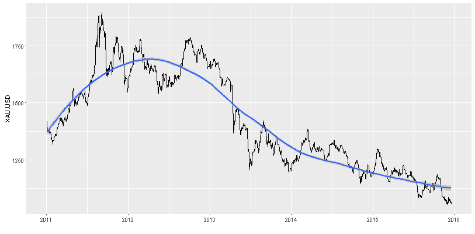
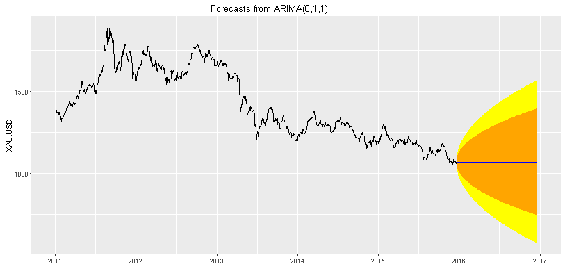

Precious Metals Price ARIMA Forecast
Coursera - Developing Data Products
- Author: Enrique Pérez Herrero
- Date: 20/Dec/2016
-
Email
-
GNU GENERAL PUBLIC LICENSE Version 2, June 1991
-
App url
- GitHub url
Description:
Precious Metals Price ARIMA Forecast App downloads the last five years prices
from Oanda and forecast the next year prices using
auto.arima function from forecast R package.
App Side Bar Panel
Select Metal Input
Select one of the known as precious metals:
| Metal | Ticker |
|---|---|
| Gold | XAU |
| Silver | XAG |
| Palladium | XPD |
| Platinum | XPT |
Select Currency Input
One between US Dollars, British Pound, or Euro can be selected.
App Tab Panels
App Tab panels are located above and can be selected like a menu.
- Prices Plot
Shows a price plot for the selected metal and currency, and a control to change
adjusted statistics: linear or loess

- Prices Table
Shows the price table data for the selected metal and several currencies
- Forecast Plot
Shows the ARIMA forecast for the next 365 days as a blue line, 80% confidence interval is displayed in orange, while 90% is in yellow.

- Forecast Table
Displays forecasted data table
- Arima model
Shows adjusted model using auto.arima from the forecast package
- Differences Plot
Plots first differences for the selected metal price and the differences of base 10 logarithm of data
- Residuals Plot
Plots the ACF and the PACF
Links
Step-by-Step Graphic Guide to Forecasting through ARIMA Modeling in R, Manufacturing Case Study Example (Part 4)
Automatic Time Series Forecasting: The forecast Package for R
Journal of Statistical Software July 2008, Volume 27, Issue 3.